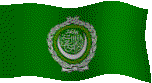

The Countries & People of Arabia
This page contains links to the Middle East, North Africa, Arab and regional information.
For a specific country resources, choose the country from the list below.
Hints:
- Use the "FIND" function in the Edit menu of your browser to search the page
- Use translating services in Chrome or Bing Bar in Internet Explorer to view page and/or linked websites in your language
About the Arab World
* Business
* Culture
* Education
* History
* Media
* Organizations
* Travel
* Special
* Gateways
Algeria |
Bahrain |
Comoros |
Djibouti |
Egypt |
Iraq |
Jordan |
Kuwait |
Lebanon |
Libya |
Mauritania
Morocco |
Oman |
Palestine |
Qatar |
Saudi |
Somalia |
Sudan |
Syria |
Tunisia |
UAE |
Yemen
Arabs, name originally applied to the Semitic peoples of the Arabian Peninsula. It now refers to those persons whose primary language is Arabic. They constitute most of the population of Algeria, Bahrain, Egypt, Iraq, Jordan, Kuwait, Lebanon, Libya, Morocco, Oman, Qatar, Saudi Arabia, Sudan, Syria, Tunisia, the United Arab Emirates, the West Bank, and Yemen; Arab communities are also found elsewhere in the world. The term does not usually include Arabic-speaking Jews (found chiefly in North Africa, Palestine/Israel and formerly also in Yemen and Iraq), Kurds, Berbers, Copts, and Druze, but it does include Arabic-speaking Christians (chiefly found in Syria, Lebanon, Palestine/Israel, and Jordan). Socially, the Arabs are divided into two groups: the settled Arab [ fellahin =villagers, or hadar =townspeople] and the nomadic Bedouin.
The invasions of Muslims from Arabia in the 6th and 7th cent. diffused the Arabic language and Islam, the Arabic religion. At its peak the Arab empire extended from the Atlantic Ocean across North Africa and the Middle East to central Asia. A great Arab civilization emerged in which education, literature, philosophy, medicine, mathematics, and science were highly developed. The waves of Arab conquest across the East and into Europe widened the scope of their civilization and contributed greatly to world development. In Europe the Arab conquests were particularly important in Sicily, from the 9th to late 11th cent., and in Spain, in the civilization of the Moors. Christian scholars in those two lands gained much from Islamic knowledge, and scholasticism and the beginnings of modern Western science were derived in part from the Arabs. The Arabs also introduced Europe to the Greek philosophers, whose writings they had already translated into Arabic.
The emergence of the Seljuk Turks in the 11th cent. and of the Ottoman Turks in the 13th cent. ended the specifically Arab dominance in Islam, though Muslim culture still remained on the old Arab foundations.
In the 20th cent., Arab leaders have attempted to unite the Arab-speaking world into an Arab nation. Since 1945 most Arab countries have joined the Arab League; its purpose being to consider matters of common interest. The original charter members were Egypt, Syria, Lebanon, Transjordan (now Jordan), Iraq, Saudi Arabia, and Yemen. The Palestine Liberation Organization (PLO) was granted full membership in 1976. Other current members include Algeria, Bahrain, Comoros, Djibouti, Eritrea (pending in 1999), Kuwait, Libya, Mauritania, Morocco, Oman, Qatar, Somalia, Sudan, Tunisia, and the United Arab Emirates.
With 22 member states in the Arab League by the mid-1990s, attempts to forge a unity among the Arabs have continued. Perhaps the most significant economic factor for the Arabs has been the discovery and development of the petroleum industry; two thirds of the world's oil reserves are thought to be in the Middle East. The Arab Common Market was established in 1965 and is open to all Arab League members. The common market agreement provides for the eventual abolition of customs duties on natural resources and agricultural products, free movement of capital and labor among member countries, and coordination of economic development.
Since 1948 a continual problem for the Arab states has been their relations with the Jewish state of Israel, created out of former Arab territory; hostility between them has resulted in four Arab-Israeli wars. In 2002 the league for the first time offered Israel normal relations with Arab countries if it met certain conditions, but many of those conditions were not acceptable to Israel. For many years, closer political unity among members was hampered by a division between pro-Western member countries and neutralist or pro-Soviet ones; more recently the division has been between militant Islamic fundamentalists and Arab moderates. The league ultimately supported Iraq in the Iran-Iraq War (1980–88) but was divided over the Iraqi invasion of Kuwait in 1990. In 1993 the league issued a statement condemning all forms of terrorism.
********
Middle East, term applied to a region that includes SW Asia and part of NE Africa, lying W of Afghanistan, Pakistan, and India. Thus defined it includes Cyprus, the Asian part of Turkey, Syria, Lebanon, Israel, the West Bank and Gaza, Jordan, Iraq, Iran, the countries of the Arabian peninsula (Saudi Arabia, Yemen, Oman, United Arab Emirates, Qatar, Bahrain, Kuwait), and Egypt and Libya. The area was viewed as midway between Europe and East Asia (traditionally called the Far East). The term Middle East is also sometimes used in a cultural sense for that part of the world predominantly Islamic in culture, in which case Afghanistan, Pakistan, and the remaining countries of North Africa are included.
********
Maghreb or Magrib, Arabic term for NW Africa. It is generally applied to all of Morocco, Algeria, and Tunisia, but more specifically it pertains only to the area of the three countries that lies between the Atlas Mts. and the Mediterranean Sea. Isolated from the rest of the continent by the Atlas Mts. and the Sahara, the Maghreb is more closely related in terms of climate, landforms, population, economy, and history to N Mediterranean areas than to the rest of Africa. The Arab Maghreb Union was established in 1989 and includes Algeria, Libya, Mauritania, Morocco, and Tunisia. Envisioned initially by Muammar al-Qaddafi as an Arab superstate, it is eventually expected to function as a N African common market, although economic and political unrest, especially in Algeria, have hindered progress on the union’s joint goals.
********
Levant collective name for the countries of the eastern shore of the Mediterranean from Egypt to, and including, Turkey. The divisions of the French mandate over Syria and Lebanon were called the Levant States, and the term is still sometimes applied to those two nations.
********
Copyright (c) 2012 Columbia University Press.
Used by permission of Columbia University Press.
General Info
Regions, maps....
Business
Economy, reports, statistics, banks, directories, jobs, investment, promotion....
Culture
Arts, architecture, education, science, poetry, literature, music, songs, dance, artists, singers, authors
Film, heritage, tradition, art, antiques, traditional crafts, Arabic cuisine, organizations, sport, health, women & society....
Education
Organizations, societies, institutions, centers, research, resources, projects....
History
Ancient & modern history, human rights, documents, politics....
Media
Arabic & Arab related newspapers & magazines printed overseas, news, newsletters, radio, TV, Chat....
Organizations
Middle East organizations, peace in the Middle East, environment, other organizations....
Travel
Arab airlines, travel, tours, guides, hotels, weather....
Special
Other people, things Arabic, flaura & fauna, related sites....
Gateways
Gateways, search engines and directories to Arabic and Arab related sites and information....
About the Arab World
General Information
- Arab.it A detailed information site about the Arab world
- All Referer Middle Eastern Physical Geography - Geography and climate, people and economy, history....
- Encyclopaedia of the Orient Middle East & North Africa....
- Encarta OnLine Maps: capitals & cities, country info, cities, people, economy, history, other related items, links....
- Middle East Information Network Comprehensive information about the Middle East
- Mon Maghreb Un portail general sur le Maghreb UMA
- Photograph Archive Early photographs of the Middle East
Maps
- Maps of the Middle East Countries, political, shaded relief, historical....
- Maps of Africa Countries, political, historical, population, vegetation....
About the Arab World
* Business
* Culture
* Education
* History
* Media
* Organizations
* Travel
* Special
* Gateways
Business and Economy
General, Economy, Reports & Statistics
- ANIMA A wide framework of political, economic and social relations
- AME Info Business information, exhibition calendar, company news, country guides, travel information, links....
- Arab-American Business The magazine for a culture of success
- Arab Beverages Forum A suitable platform to discover the opportunities and prospects of the Arab beverage industry
dt>Arab Business ME business & industry news, banking and finance, energy, jobs, stock markets, reports, surveys, briefings, events
- Arab Centre for Law Studies & High Technology Data security and computer crime....
- Arab Monetary Fund Promoting the development of Arab financial markets
- Arab Fund for Economic and Social Development An autonomous development finance Pan-Arab organization
- Arabian Business & Cultural Guide Things to know and the do's & don'ts for the traveller and the business man
- Boursa.info The Arabic Financial Site
- Business and Men International Arab and African economic magazine
- Business Software Alliance The foremost organization dedicated to promoting a safe and legal online world
- CBS MarketWatch Africa/Middle East markets - Stocks traded as ADRs, currencies, general information....
- Franco Arab Chamber of Commerce Commercial relations, and industrial, financial, agricultural and touristic cooperation
- Gulf Business International & Middle East business from a Gulf prospective
- Gulf Law Information on general law and corporate law relating to the Arab Middle East
- InfoSamak Centre for Marketing Information & Advisory Services For Fishery Products in the Arab Region
- ITP Net Online source of Middle East technology and business news, providing daily IT and business info, media reviews and business resource
- Maghreb Arab Online Business and economy of the countries of Algeria, Mauritania, Morocco, Libya and Tunisia
- ME Steel Linking steel buyers and sellers in the Middle East
- MENA PeaceNet Sustainable peace through sustainable commerce using sustainable technologies
- MENA Report Combining a timely update of daily news coverage with market figures and hard data....
- Middle East Bulls Analysis of securities in Middle East Markets
- Middle East Economic Digest - MEED News on commercial and political issues
- Middle East Economic Survey Analysis of the oil and gas sectors, capital markets, financial and banking developments
- Middle East Business Daily business news and articles from the world media....
- Middle East Logistics Provider of strategic information to the global freight transportation and logistics industries
- National US-Arab Chamber of Commerce
Promote and support US-Arab business and economic cooperation. Country profile, key facts, economic review, political structure, sector analysis, investment....
- Trade Arabia Trade News, Business Directory, Premium Content, Classifieds
- Zawya Comprehensive business and finance coverage of the Middle East and North Africa
Banks
- Arab Bank A leading international institution with more than 370 branches world-wide
- Gulf International Bank Won the Euromoney Award of "Best Local Bank in the Middle East" in 1999
- World Bank Middle East & North Africa - Country info, overview, news & events, data & statistics, publications & reports, development topics, projects & programs....
Directories, Job Opportunities
- Career MidEast Online recruiters
- Gulf Directory Country & business info and business directory....
- Gulf Talent A job site for professionals in the Middle East & Gulf region
- Jobs in GCC Jobs in GCC Countries, Saudi Arabia, Kuwait, UAE, Qatar, Bahrain, Oman
- ME Steel Linking buyers & sellers in the Middle East. Directory & portal
- MidEast Net The Arab & Middle East business gateway
- Mihneti A recruitment site specializing in the Middle East
- North Africa Journal Weekly, gateway to North Africa business....
- Business Aid Centre Specialises in recruiting all types of personnel for companies both large and small throughout the Gulf
- International Hospital Recruitments Exciting, challenging opportunities in Saudi Arabia and the Gulf
- Job Finder Network The leading employment network in the Middle East
Investment & Promotion....
- Arab Business Network Promoting companies & their products
- Arab German Consulting
Dedicated to exporters, importers, manufactures and opportunity seekers
- ArabCom Annual international trade shows and conferences
- Arab Trade Financing Program Promoting trade among Arab countries and enhancing the competitive ability of exporters
- Australia Arab Chamber of Commerce and Industry Linking Australian and Arab businesses. Arab countries, companies
- Expo Guide Arabia Online guide to latest events, exhibitions and conferences throughout the Middle East
- Gulf Business Arab B2B Portal - Middle East Products, Companies, Trade Leads. Import Export....
- International Fairs & Promotions - IFP Middle East's leading trade fair organizer. Exhibitions calendar, venues....
- Middle East Events Events, exhibitions, conferences, what's on today/this week....
- Real magazine Real Estate and Investment in the Middle East
About the Arab World
* Business
* Culture
* Education
* History
* Media
* Organizations
* Travel
* Special
* Gateways
Art, Culture & Sport
Culture, Heritage, Tradition
- Al-Jadeed A review & record of Arab culture & art (USA)
- Al-Mashriq - The Levant Guide and entry point to the life and history of the countries of Eastern Mediterranean
- Arab Ambassador Monthly magazine on Arab culture (USA)
- Arab American National Museum Document, preserve, celebrate, and educate the public on the history, life, culture of Arab Americans (USA)
- Arab Art Exchange Links to Arab artists ( images, reviews, biographies, homepages), museums, galleries, Arab art articles
- Arab Culture and Identity History, language, art, music and literature
- Arab Observer Culture, history, science....
- Costumes and Embroideries Middle East & North Africa - Amazing richness and diversity
- Circumcision Explanations of the origin of circumcision are entirely conjectural....
- Middle East Affairs Historical review, literature and culture and various forms of design, political, cultural and economic developments....
- Reem Creations Culture, art, musicians and Instruments, dictionary, postcards, melodies, forums, links....
- Shems Magazine catering to the Arab American community with their many backgrounds (USA)
- The World of Bedouin Weaving Articles, books, workshop, slideshow, links....
- Aklaat Arabic cooking....
- Middle East Cooking Ingredients, recipes....
Arts & Architecture
- Arabia Exotica Showcasing art, architecture and people from North Africa and the Orient
- Arabic and Islamic Architecture Articles on buildings, trends, architects, art of the Muslim and Arab world (past and present).
- Arabic Typography A communication platform for Arabic designers/typographers and anyone else interested in the subject
- The Art of Arabic Calligraphy The Language and The Script, a brief history, the Kufic styles, the Cursive styles....
- Darat Al-Funun - Khalid Shoman Foundation
Home for the arts and the artists of the Arab World, dedicated to promoting Contemporary Arab Art, through exhibitions, lectures and workshops
- Ebal Documenting the traditional and contemporary Arabic culture and art....
- Islamic & Arabic Arts & Architecture Explains the historical and cultural significance of Islamic and Arabic artifacts
- IslamicArchitecture.Org Art, dynasties, mosques, palaces, techniques....
Education & Science
- Ibn Khaldûn on the Web Everything about the great 14th century Arab historian and philosopher of history
- Muslim Scientists and Scholars Biographies
- al3ez.net Al-Madinah Al-Munawara Encyclopedia, a treasure of information
- Al Manahij Curriculum and Instruction - Teaching in the Arab world
- Arabic Mathematics History & mathematicians
- Classical Islamic Biomedicine Links to Islamic medicine, science and alchemists....
Poetry & Literature
- Arabi World Books
Cultural club and Arabic Bookstore promoting cultural dialogue and featuring articles, stories, literature, poetry, individual dossier for Arab writers....
- Arabic Love Poems A collection of popular love poems
- Al-Funun Appreciating early Arab-American literature
- Al-Waraq Over a million pages of Arabic literature
- Adab Arab poets & poems from pre-Islam to today....
- Arabic Poems Welcome to our unique & first encyclopedia for Arabic poems, poets & songs
- Arab World Books Club and bookstore. Includes Authors' sites (Biographies), articles, debate....
- Window on Arabic Poetry Its rich manifestations and transformations
Music, Songs & Dance
- 3 Arabia MP3 + an art gallery dedicated to the celebrities and singers of the Arab world
- Adam Basma Represent the true art of Middle Eastern Dance in the USA. Includes costume museum
- Arab-Esque Dance ethnography and ethnology, links...
- Arab musical instruments The distinctive quality of Arab music owes a great deal to the type of instruments employed
- Arabic Classical Music One of the world's major musical systems
- Arabic Music Includes music from 1998 and prior years (Good quality sound)....
- Arabic Music The right place to download & listen to free Arabic music
- Art Of Middle Eastern Dance A site for belly dancing education, inspiration, and entertainment!
- Belly Dance Museum Information on oriental dance, belly-dance in silent movies, oriental dance costumes from the 1700's, 1800's and the 1900's
- Mazika Arabic music portal with latest news of the singers....
- Tarab Arabic songs categorized by style then by artist, new & top hits, news
Artists, Singers, Authors....
- Ammar Abd Rabbo Photographer. Published stories and various pictures....
- Ameen Rihani Biography, works, museum, honors, tributes....
- Fairuz and The Rahbani Brothers Information, biographies, tributes,articles, songs....
- Fairouz OnLine A Legend, history, everything Fairuz, the latest....
- Fairouz Our ambassador to the stars - Music, songs, plays & films....
- Farid El-Atrash The king of the lute - An actor, a singer, a composer....
- Farid El-Atrash Remembering Farid Al-Atrash: A contender in the age of giants
- Gibran Khalil Gibran Works, art, museum. Bsharri, biography....
- Kazem Al-Saher Every thing about this famous singer. Songs, videos, interviews....
- Leyla Mourad "Golden voice of over 1,200 songs and 28 films"
- Mohammad Abdel Wahab The father of modern Egyptian song
- Nazem El- Ghazali Songs of the much loved Iraqi singer
- Nour El-Houdda Girl with golden voice - Popular singer and actress
- Sayed Darweesh One of those lightning trajectories in the history of music
- Umm Kulthum The star of the east - The Diva of Arabic song
Film
- 1999 Arab Film Festival This year's event promises to be a stellar showcase, so mark your calendars....
- Arab Film Distribution Features a wide range of narrative films, documentaries, visual essays and ethnographic films
- Sinbad Multimedia Quality films & multimedia about the Arab world, news, reviews....
Art, Antiques & Traditional Crafts (for sale)
- Arab Art Gallery Dedicated to the promotion of the fine arts
- Beirut Antiques Fair Trade shows & antiques dealers
- Silsal Ceramics Pieces draw inspiration from the pottery of the Middle East's ancient civilizations
- A World of Art Middle Eastern paintings and prints
Organizations, associations, societies
- Arab Classical Music Society Promoting Arab music events, networking, and for coordinating related activities (USA)
- Arab Writers Union Cultural & political magazines, theatre, stories..,.
- Arab Foundation for the Image Aims to promote photography by locating, collecting and preserving the photographic heritage
- Babelmed.Net Promoting cultural exchanges in the Mediterranean
Sport
- Arab Archery Federation - FATA Setting up of Arab and international tournaments
- Gulf Cup Teams, scores....
Health
- Al-Razi.Net Arabic Medical Network
- Arab Medical Magazine Section for the medical professions and Section for the patients and the public
- Arab Medical Magazine Section for the medical professions and Section for the patients and the public
- Arab Medicare Web portal for health care professionals serving the Arab world....
- Arab Medical Magazine A resource for safety news for the middleast
- Centre for Arab Genomic Studies Workshop on Genetic Disorders in the Arab World
- Maghreb Med Online medical resources in Tunisia, Algeria, Morocco, and Libya
- Medics Index A resource for locating medical advice and suppliers in the Middle East and Gulf area
- MD Arabia Source for health care information in the Arab world
- Sehha Arabic medical and health related information
- Tadawi Guide for medical services, health education and doctors listing in the Arab world
- Tashafi Health information
- Tawahud Online information and resources on developmental disabilities, Autism and others
- Your Doctor General health issues
Arab Women Organizations, Societies, Affairs....
- Arab Women Connect A clearinghouse website of information for, by and about Arab women
- Arab Women's Solidarity Association Promotes Arab women's participation in social, economic, cultural, and political life
- Center of Arab Women for Training and Research Promoting gender equality in the Arab World through research, training, networking and advocacy
- Information Centre for Women and Children Serving Arab women and children living in diverse and developing societies
- Laki Anti Arabic site specialized for women
- Nisaa Offers women in the Arab World the opportunity to exchange experiences and information on gender specific topics
- UNIFEM Recognizes the important role of Arab women as central actors in families, communities and economic and decision-making systems
- Women's Court Aims at fighting all forms of violence practiced against women in Arab societies
- Women in the Middle East Articles & links
About the Arab World
* Business
* Culture
* Education
* History
* Media
* Organizations
* Travel
* Special
* Gateways
Education
For a specific country education links, choose the country from the list below.
Algeria |
Bahrain |
Comoros |
Djibouti |
Egypt |
Iraq |
Jordan |
Kuwait |
Lebanon |
Libya |
Mauritania
Morocco |
Oman |
Palestine |
Qatar |
Saudi |
Somalia |
Sudan |
Syria |
Tunisia |
UAE |
Yemen
Centres, Institutions....
- America-MidEast Educational and Training Services (AMIDEAST)
Strengthens mutual understanding and cooperation between Americans and the peoples of the Middle East and North Africa
- Arab Educational Training Center for Gulf States Programs, resources....
Organizations, Societies....
- Arab Bureau Of Education For the Gulf states
- Arab Council for the Gifted & Talented
- Arab League Educational, Cultural and Scientific organization
To evolve and implement new approaches and strategies
- Arab Open University (AOU) a private Arab institution of higher education with special status
- London Middle East Institute A centre for academic research and an essential resource
- School Arabia Providing a free web-based interactive learning environment
About the Arab World
* Business
* Culture
* Education
* History
* Media
* Organizations
* Travel
* Special
* Gateways
History, Human Right & Politics
Ancient & Modern
- The Abbasids Rise and fall.... 750-1517
- Al-Tareekh History of the Arab world....
- Arabian Peninsula Political Geography Articles
- BBC Quick Guide Arab League - Key facts, figures and dates
- BBC Timeline Arab League - A chronology of key events
- Columbia Encyclopedia Arab-Israeli wars, Iran-Iraq war, Gulf war
- Documents Pertinent to Middle Eastern Issues Since 1907....
- FrontLine The Gulf war 1991
- History Central America's Wars - Operation Desert Storm
- Mesopotania Ancient Near East, Sumeria, Akkadia, Babylonia, Kassites, Hhittites, Assyria, Chaldea, Phoenicia, Carthage
- Middle Eastern Political Geography Arab-Israeli Wars, Iran-Iraq War, Persian Gulf Wars....
- Nabataea.net Everything you ever wanted to know about the Nabataean Empire, and more....
Human Rights
- Amnesty International Arabic Site Middle East & North Africa annual reports, press releases, campaigns....
- Amnesty International
Middle East & North Africa. News, reports, urgent action, latest report....
- Arab Institute for Human Rights (AIHR)
- Arab Organization for Human Rights (AOHR) Call for fundamental freedoms of all citizens and residents of the Arab world
- Friends of Humanity Track developments in some regions in the world especially Europe, the Middle East and North Africa
- Human Rights Watch - Middle East & North Africa
Investigates and exposes human rights violations
- Lawyers Committee for Human Rights Promoting the Human Rights Movement in the Middle East
- Wheels of Justice Non violent education and action against war and occupation in Iraq and Palestine for justice and universal human rights
Documents & Politics
- Arab View A collection of articles written by leading journalists and editors in the Middle East....
- Center for Defense Information Research on the social, economic, environmental, political and military components of global security
- International Crisis Group
Assess local conditions and produce regular analytical reports containing practical recommendations
- Middle East Realities Independent information and analysis about what is really going on in today's Middle East
- Middle East Research and Information Project - MERIP Middle East report, background to current events, articles....
- Oppression.Org For the sake of humanity, we have a duty to make their suffering known....
- Quiz on the Middle East Just so you can keep up with the perpetual crisis in the Middle East
About the Arab World
* Business
* Culture
* Education
* History
* Media
* Organizations
* Travel
* Special
* Gateways
Media
For a specific country media, choose the country from the list below.
Algeria |
Bahrain |
Comoros |
Djibouti |
Egypt |
Iraq |
Jordan |
Kuwait |
Lebanon |
Libya |
Mauritania
Morocco |
Oman |
Palestine |
Qatar |
Saudi |
Somalia |
Sudan |
Syria |
Tunisia |
UAE |
Yemen
Arabic & Arab Newspapers & Magazines, Directories
- Akhbar Al-Arab Daily Newspaper....
- Al Ousbou' Al Arabi Pan-Arab political magazine
- Arabic Media Centre Monthly magazines: Hasad Al-Fikr (literature), Al-Quds (political), Zohour (Women), Fersan (Youth)
- Ofouq Monthly magazine - Literature
- Sayidaty Weekly family magazine....
- Fares.Net Arab news & media and other links (by period)
- Middle East News Internet Press Directory Newspapers & news resources
Arabic Newspapers & Magazines printed overseas
- Al-Arab Online Daily (UK)
- Al-Hayat Daily (UK)
- Al-Manar Al-Jadeed Monthly magazine (USA)
- Al-Mustakillah Weekly (UK)
- Al-Quds Al-Arabi Daily (UK)
- Al-Sharq Al-Awsat Daily (UK)
- Al-Zaman Daily (UK)
- Al-Watan Weekly (USA)
- Al-Wefaq Daily (USA)
- Arab Times Weekly (USA)
- Bareed Al-Janoub Weekly (UK)
- Le Monde Diplomatique Monthly (France)
- Saout Al-Uruba - Arab Voice Bi-weekly (USA)
News & Newsletters OnLine
- Al-Bushra, Arab American Roman Catholic Community Plenty of interesting articles....
- Al-Naba~ Magazine - Cultural
- Al-Nashra Arab Americans Affairs
- Al-Qanat Online news, sport, art culture....
- Alef Yaa News, articles, cinema, theatre....
- Ain Al-Yaqeen Weekly political magazine (USA)
- Arab Info Center Daily online news, analysis, research, economy, sport, science & technology, cartoons....
- Arab Observer Free thinking pages offering the readers incentives to reread the official written history and encouraging them to rethink it
- Arab Star Published in Dallas, Texas
- Arab World News Daily editorials, articles, news about Arab countries from the world media....
- Arabia.Com The destination for Arab news, business, chat, shopping, weather, horoscopes, travel....
- ArabicNews Daily PanArab & country News
- Arabies Trends The international magazine on Arab affairs
- ArabicNewsPaper.Com Arab news from different sources. Continuously updated....
- ArabyNet Brings you the Israeli perspective on the issues of the Middle East
- Bab.Com Online news updated daily and gateway
- Ekaruna An online magazine related to real estate and construction
- Gulf Construction Online Trade journal
- Hasan Nasrullah News Site Focuses on events in Iran, Iraq and the Middle East (No ownership by the real Hasan Nasrullah or Hezbollah)
- Mafhoum - Concept
Arab World database: News & Media, Economy & Finance, Press Reviews....
- MSNBC - Middle East & North Africa Daily news & stories....
- Maghreb Confidential Economic and political information on Tunisia, Algeria, Morocco and Libya
- MidEast News Press & media, books & arts, maps+regional news, oil, terrorism, water, obituaries & profiles
- Middle East Daily Editorials, articles, news from the world media....
- Middle East Information Center Offers history, analysis, news and discussion forums
- Middle East News Agency - MENA
News service with distinguished coverage of regional and international news
- Middle East News & World Report Arab world, religion, interviews, Arab Americans....
- Middle East Online News, Arab gates, opinion, business, culture, features....
- Middle East Post Discuss and analyze Middle East political issues
- Middle East Realities Information and analysis about what is really going on in today's Middle East
- Middle East Review of International Affairs A new approach to study and discussion on the modern Middle East (Israel)
- Middle East Times Weekly news and independent analysis of politics, sport, business, religion and culture in the ME
- Middle East UK Your online guide to all things Middle Eastern....
- Moheet Online news, various subjects
- Motion Trends Automotive daily
- Naseej Arabic & International news, economy, sport, tourism. Magazines & periodicals....
- North Africa Journal Bringing North Africa to the world - Updated weekly
- Nouzha Online cultural magazine, chat, directory....
- Washington Post Special reports: Peace process, war & peace in the Middle East....
- Washington Post Middle East - News & references
- Washington Post North Africa - News & references
- World News By region and sector, business, politics....
- Yahoo Full News Coverage Middle East conflict
Radio, TV....
- Al Arabiya Politics, business, current affairs, sports, science, lifestyle, news, documentaries, talk-shows, and educational programs
- Al-Jazeera Arab World news, global news, economy, culture, special reports, science and technology, polls, cartoons....
- Arab States Broadcasting Union News & events, activities, channels....
- ArabSat TV & Radio stations in the Arab World
- ART Arab radio & TV network
- BBC News - Africa News in audio, news in video....
- BBC news - Middle East News in audio news in video....
- BBC World Service - Africa & Middle East News, Arab affairs in British press, learn English
- CNN Interactive Arabic Edition
- CNN Interactive Middle East daily news and archive
- Future TV Network Programs, news, debates
- MBC Free-to-air, pan-Arab, news and entertainment channel
- Orbit Satellite television and radio network - Middle East & North Africa
- Radio Monte Carlo News, economy, sport, culture, science....
- Radio Sawa Committed to being accurate, objective, and comprehensive
- Reuters Middle East and world newa, economy, sport, variety, internet....
- Showtime Arabia The best western entertainment for the Middle East
- Star Times The Middle East TV Guide. Schedules and channels....
- Voice of America - Middle East Bringing you the news, music, and information you need and want
Chat, Internet....
- Ajeeb Real Internet, translation, many subjects are covered....
- ArabianKid Games, stories, hobbies, science, music, chat....
- Ashkara Arab48 portal, forums, news, culture, Almanac....
- Cafe Arabica Arab-American online community center - Calendar of events, job listings, discussion boards, and articles
- Middle East Polls Take a poll, view results, prizes, statistics, newsletter....
- Muntada Al-Qal3ah Arab chat - Culture, politics, literature, religion
- Planet Arabia Everything Arab - Articles, news, directories, chat....
Media Related Sites
- Ali Abu Nimah's Bitter Pill Uncovering media myths about the Middle East
- Alif Documentary and dramatic productions
- Alternate Focus Produces documentaries and interviews about the Middle East not usually seen by American audiences
- Arabic Media Arabic radio & TV, newspapers & magazines by country, movies, songs, books....
- Baha Boukhari Cartoon Featuring Abu-Arab, Abu Al-Abed, Arab & international themes....
- Committee for Accuracy in Middle East Reporting in America Promoting accurate and balanced coverage....
- Common Dreams An eclectic mix of politics, issues and breaking news hard to find with our corporate-dominated media
- David Duke OnLine If you can think for yourself rather than simply accept what the media dishes out, you will find this site of interest
- Fact International To reflect, as accurately as possible, the hopes and aspirations of the peoples and countries in the region
- Federation of Arab News Agencies Development of cooperation between the agencies
- International Information Programs ME & NA - Communications service for the foreign affairs community from US Department of State
- Middle East Facts Facts Ignored or Manipulated by Western Media
- Middle East Intelligence Bulletin Analysis of political and strategic developments in Lebanon, Syria & the Middle East
- MidEast Watch Analysis of Israel, Palestine, the Conflict, Media, US involvement, Maps, Iraq & the Sanctions....
- Robert Fisk Articles and reports by the Middle East correspondent for Independent Newspaper UK
- Suite101 Middle East politics, articles & links
- United States Report on the Middle East Political, economic and defense news are updated daily
About the Arab World
* Business
* Culture
* Education
* History
* Media
* Organizations
* Travel
* Special
* Gateways
Organizations
Middle East Organizations
- Arab Administrative Development Organization (ARADO) The programs and services are primarily geared towards higher managerial levels
- Arab Association of Cyber Law Forums, conferences, workshops, activities....
- Arab Geographic Information Systems Essential tools for governance, for commerce, and for environmental and social science
- Arab Gulf Programme for UN Development Organizations
Supporting and funding of programmes and projects, especially for motherhood and childhood
- Arab Industrial Development and Mining Organization Restructuring of the organs of inter-Arab cooperation
- Arab Organization for Agricultural Development To enhance agricultural development in the Arab region
- Arab Telecommunication & Information Council of Ministers
- Arab Union for Cement and Building Materials Coordinating industrial activities amongst its members
- Centre for Arab Unity Studies Promotes Arab unity
- Centre for Strategic Studies Research and Documentation Middle East & Israeli issues
- Cooperation Council of Arab States GCC - The Gulf Secretariat General. Charter and countries info
- Council of Arab Economic Unity To achieve complete economic unity among the member states
- Economic Research Forum Its mission is to initiate and fund policy-relevant economic research, to publish and disseminate the results
- GCC-Cigre GCC Regional Committee for High Voltage Electric Systems
- Gulf Organization for Industrial Consulting GOIC - to enhance industrial development in the Gulf Cooperation Council (GCC)
- League of Arab States Arab issues, community, news and declarations, civilization, photo gallery, Jerusalem....
- Middle East Desalination Research Centre Dedicated to basic, applied and research in the area of desalination technology
- Naif Arab Academy for Security Sciences
Resources for making the Arab region live in peace and security
- Pan Arab Neurosurgical Society Aims to join all the Arab countries in one Fellowship supported by the International Societies
- Regional Information Technology and Software Engineering Center (RITSEC) Development of the Information Technology and Software Industry in the Arab Region
- Synchrotron-light for Experimental Science and Applications in the Middle East A cooperative venture by the scientists and governments of the region
Peace in The Middle East
Visit Peace Process for Palestinian issues
- Begin-Sadat Centre for Strategic Studies Dedicated to the study of Middle East peace and security, in particular Israel
- Middle East Children's Alliance - MECA Peace and Justice in the Middle East, focus on Palestine, Israel, Lebanon and Iraq
- Middle East Peace A community of peacemakers advancing Middle East peace through interaction, information and inspiration
- MidEast Web for Coexistence Strives to create a better Middle East, to bring the peoples of the region closer
Environment
- Al-Reem Environmental Devoted to the environment of the Arabian Gulf region....
- Environment & Development The Leading Pan-Arab Environment Magazine
- Water Science and Technology Association The result of individual efforts of those concerned with water affairs in the GCC
Other Organizations
- Al-Hewar Centre To help overcome the negative image of Arabs and Muslims that has pervaded American culture
- American-Arab Anti-Discrimination Committee Legal Services, education, events, press, chapters, publications
- American Near East Refugee Aid - ANERA To reduce poverty and relieve suffering in the Middle East
- Arab American Action Network Provides services to Chicago's Arab American community
- Arab American Institute Committed to the civic and political empowerment of Americans of Arab descent
- Atfal.Org Supports issues and events related to the Global Movement for Children in the Arab world
- Australian Arab Council
- Centre for Muslim-Christian Understanding Better understanding between the Muslim world and the West
- Economic and Social Commission for Western Asia UN-SECWA Survey of economic and social development
- Initiative EUMEDIS For the development of Euro-Mediterranean new communication and information technologies
- Institut du Monde Arabe To favor the cultural exchanges, the communication and the cooperation between France and the Arabic world
- MEDEA
European Institute for Research on Mediterranean and Euro-Arab Co-operation, Information & Special files
- Middle East Institute Founded on the premise that the Middle East would become a key region for the United States
- Middle East Policy Council Journal, teachers workshops Special reports, related stories, News & references
- Near East Foundation Helps people in the Middle East and Africa build better lives for themselves and their communities
- UN Refugee Agency (UNHCR) Unrivalled research tool
- UNDP's Sub-regional Resource Facility for Arab States Works to network knowledge and expertise
- United Nations Development Programme - UNDP Supporting economic growth and improved governance
- US Bureau of Near Eastern Affairs US relations, country information, peace process, regional topics....
About the Arab World
* Business
* Culture
* Education
* History
* Media
* Organizations
* Travel
* Special
* Gateways
Travel & Tourism
Arab Airlines
- Arab Air Carriers Organization (AACO) Information and links to airlines not listed below.
- Afriqiyah Airways Libya
- Air Algerie Schedules, agencies, reservation, FAQ....
- Daallo Airlines Somalia and Djibouti
- Egypt Air
- Emirates UAE
- Gulf Air Bahrain
- Kuwait Airways
- Middle East Airlines - MEA Lebanon
- Oman Air
- Palestinian Airlines
- Qatar Airways
- Royal Air Maroc Morocco
- Royal Jordanian Airlines >
- Royal Wings Airlines Jordan
- Saudi Arabian Airlines
- Sudan Airways
- Syrian Air
- Trans Mediterranean Airways - TMA Lebanon
- Tunis Air
- Yemenia Yemen Airways
- Aer Rianta Involved in aviation and retail development in the ME region
Travel & Tours
- Atlas Travel & Tourist Agency Jordan, Syria, Lebanon, Holy Land - Tourist information, cities & sites, hotels, entertainment
- Ancient World Travel & Tourism Jordan, Lebanon, Syria and the surrounding countries
- Pan East Tours For the discovery of the nations & unique cultures of the Middle East....
- Voyageme Go places in Egypt, Jordan, Lebanon, Oman, UAE. Travel news, regional festivals, exhibitions and expos, hotels....
Guides
- Armchair World 1 Tips for travellers to The Middle East and North Africa
- Armchair World 2 Tips for travellers to Sub-Saharan Africa
- Middle East Traveller Country guide
- Sahara Info Forum, trip reports, photos, vehicle know how, desert directory....
- Travel Notes Africa, country info, brief history, currency converter, flag, anthem, hotel search....
- Travel Notes ME, country info, , brief history, currency converter, flag, anthem, hotel search....
Hotels
- MetroStar Search for hotels in the Middle East
- Rotana Hotels, Inns & Suites One of the leading operator of hotels within the Middle East
Health & Travel Tips
- CDC Travel Information 1 Health information for travellers to the Middle East
- CDC Travel Information 2 Health information for travellers to North Africa
Weather
- Yahoo! Weather Africa
- Yahoo! Weather Middle East
About the Arab World
* Business
* Culture
* Education
* History
* Media
* Organizations
* Travel
* Special
* Gateways
Special Sites
Christians
- Al-Bushra Who are the Christians of the Holy Land and the Middle East? and other FAQs
Jews
- History of the Jews From the Catholic Encyclopedia
- The Jews Early history....
Moslems - Read the Quran to really know Islam
- Al-Islam The Quran translated to many languages. Includes Hadith, biography of the Prophet (Sirah), manners....
- Dates Converter Gregorian to Hijri, Hijri to Gregorian
- Hajj and Umrah Info Portal Religious information, Travel information....
- Islam OnLine Credibility & distinction
- Qaradawi's Papers Books, lectures, fatwa, research, articles, poem, comments....
- The Rightly-Guided Caliphs Those Caliphs who truly followed in the Prophet's foot steps
- Submission A source on Islam on the WWW in many languages. Includes Mathematical Miracle of the Quran.
- Teachings of Islam A site dedicated to the cause of Islam, Muslims and Mankind by Imam Muhammad Shirazi
Assyrians
- Assyrian Info A comprehensive library of archives containing documents and images of past and present
- Nineveh & Assyria A historical summary of the Assyrian people, from the dawn of civilization to the refugee situation of today
- The State of Assyria News, education, government, health, art, sport, history....
Kurds Also see Iraq
- AKA Kurdistan Opportunity to build a collective memory with a people who have no national archive
- Kurdistan Regional Government - KRG News, progress, culture, reference....
- The Kurds Early history....
Tuareg & Berber Also see Algeria
- Tunghat A page about the Tuareg people (Imazighen of Niger, Mali, Burkina, Algeria and Libya)
Flaura & Fauna
- A-Z of Camels The desert dweller's primary source of transport, shade, milk, meat, wool and hides
- Arabian Horse Guide General information on the Arabian horse, interesting articles and an international marketplace
- Arabian Wildlife Devoted to all aspects of the natural world
- BirdLife Middle East To determine the priorities for bird conservation in the region
- Camel Pictures and Facts
- Coral Reefs Seas of the Middle East, oil pollution and Red Sea tourism lead the list
- Ornithological Society of the Middle East To encourage an interest in and conservation of birds of the Middle East
Other Related Sites
- Al-Ahwaz About the Arabs of Iran
- Ansab A search engine on Arabian Peninsula tribes and families
- Arabic Montreal Montreal Middle Eastern and Arabic Local Businesses and History Articles
- Desert Voice Provide interesting information about GCC countries
About the Arab World
* Business
* Culture
* Education
* History
* Media
* Organizations
* Travel
* Special
* Gateways
Gateways to the Arab World
- 123Arab.Com Directory & search engine
- 4 Arabs The largest search engine for Arabs and the Middle East
- Aiwa Gulf GCC countries. News, directory, entertainment, shopping, family, classifieds, exhibitions....
- ArabLand The Arab World Search Portal
- Arabic Nights Arabic entertainment directory, Australia, Canada, UAE, USA
- Al-Bab Country profiles, Arab life, culture, news....
- Al-Bawaba The Middle East gateway....
- Al-Dalil.Ajeeb Arab gateway, accurate search and easy browsing. News, discussions, chat, Islamic sites....
- ArabBay Directory, gateway, services, chat, news....
- ArabInfoSeek The Arab World wide web directory
- Arabo.Com Arab sites directory - Hotels, business, tourism....
- Araboo.Com Arab guide, Arab news, Arab web resources
- ArabSearcher This Directory features over 60 of Arabic Search Engines in North Africa and Middle East
- ArabSites.Com Search listing by country or category....
- ArabWideWeb Arab gateway, search, news, chat, horoscope, classifieds....
- Ayna Arabic internet directory, community, chat, e-mail, greeting cards and more....
- Fanoos Directory, news, events, shopping, travel, chat, forum, sports, music, radio, TV, love & dating....
- Hahooa Explore the Arab World. Categorized listing, includes interesting topics
- MarWeb Morocco and Maghreb (North Africa) Search Engine and Directory
- MELinks Middle East search engine
- Middle East Internet Directory Comprehensive and accurate listings of commercial & business web sites, country statistics
- Naseej.Com News & directory. A comprehensive listings by category. Islamic gateway....
- Safara Gateway, services, chat,music, news,games....
- Zorona Directory, gateway, services, chat....
About the Arab World
* Business
* Culture
* Education
* History
* Media
* Organizations
* Travel
* Special
* Gateways
Algeria |
Bahrain |
Comoros |
Djibouti |
Egypt |
Iraq |
Jordan |
Kuwait |
Lebanon |
Libya |
Mauritania
Morocco |
Oman |
Palestine |
Qatar |
Saudi |
Somalia |
Sudan |
Syria |
Tunisia |
UAE |
Yemen
Please link to this page.
https://www.hejleh.com/countries/index.html
For comments, reports of deadlinks and adding your URL
Names, pictures and logos are the copyright of their respective owners.
(C)Copyright 1998-2017 Mazen Hejleh. All rights reserved.